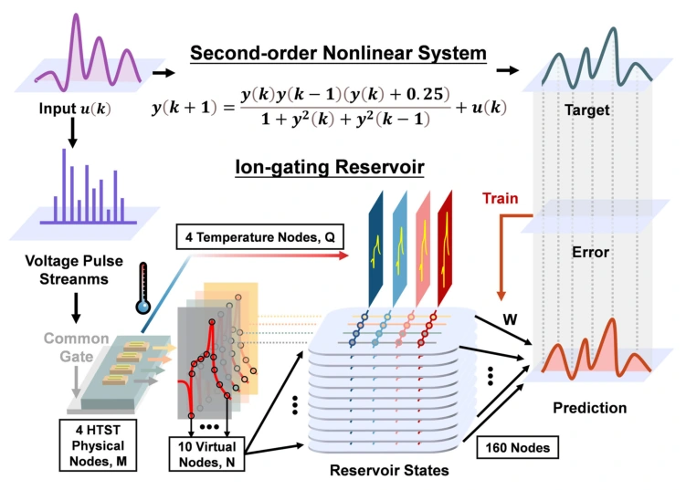
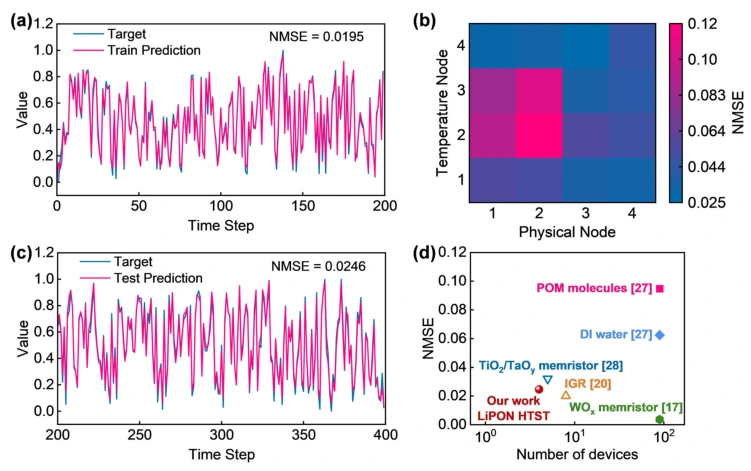

突触阵列与 FPGA 构建混合信号类脑硬件
Nature Communications · 2023
半结晶聚合物结构调控离子迁移，为超小尺寸有机突触器件和阵列提供材料基础。研究进一步将有机突触阵列与 FPGA 控制器协同集成。
混合信号硬件将阵列电导、脉冲刺激与控制读出连接起来，体现从单器件可塑性走向可执行计算任务的硬件路线。


仿视网膜前端连接感知与运动决策
Science Advances · 2025
仿视网膜阵列采用一个光探测器–一个晶体管的像素结构，通过可重构光响应执行自适应成像和原位特征提取，降低视觉信息表达的冗余。
系统把感知前端、特征编码与机器人运动决策连接起来，是由材料与器件性能走向感知—计算—行为闭环的智能微系统示范。

可调离子动态与读出算法协同处理时间信息
IEEE Transactions on Electron Devices · 2026
LiPON 固态电解质与 ITO 沟道耦合，提供温度可调的非线性和衰退记忆。四个突触晶体管结合温度编程及虚拟节点扩展生成 160 个储备池状态。
输入时间序列映射为器件响应，再结合读出层完成预测验证，展示器件动态与算法之间的任务协同；研究并不等同于已经制成完整通用类脑芯片。


相关论文
- An ultrasmall organic synapse for neuromorphic computingNature Communications · 2023 · DOI: 10.1038/s41467-023-43542-2
- Perovskite retinomorphic image sensor for embodied intelligent visionScience Advances · 2025 · DOI: 10.1126/sciadv.ads2834
- High-Temperature LiPON-Gated Synaptic Transistors for Reservoir ComputingIEEE Transactions on Electron Devices · 2026 · DOI: 10.1109/TED.2026.3709783